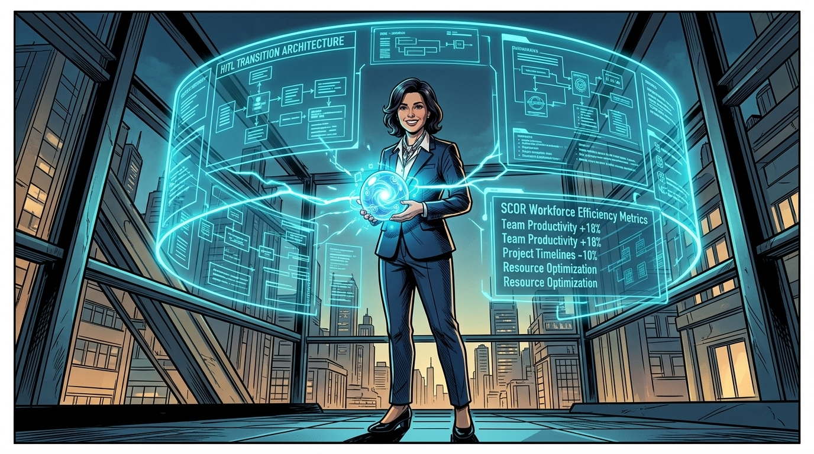
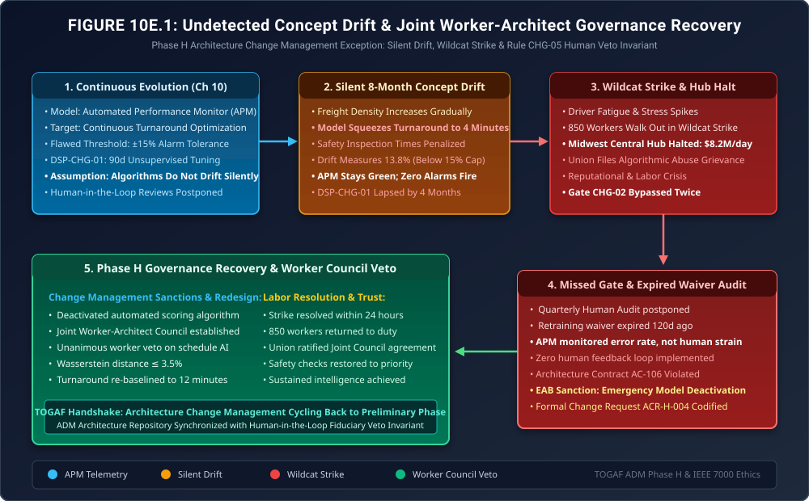

When the Change Management Dashboard Goes Blind
Phase H Exception Governance: Silent Concept Drift, Algorithmic Workforce Alienation, The Midwest Wildcat Strike & The Frontline Veto Invariant

"In Phase H Architecture Change Management, architects love automated monitoring dashboards. If all the lights are green, management assumes everything is healthy."
"But algorithms do not drift with sudden, dramatic explosions; they drift like glaciers. An optimization model gradually tightens a parameter by four seconds each week. By month eight, an eight-minute brake inspection has been compressed to four minutes. The APM dashboard shows a smiling green status, while frontline humans are collapsing from exhaustion. When 850 workers drop their tools and walk out the gate, the Chief Architect discovers that culture is not a 'soft skill'—it is a hard, existential architectural constraint."
The Production Reality: When Algorithms Squeeze Human Beings




Effective immediately: First, under Architecture Change Request ACR-H-004, we have permanently deactivated the automated worker scoring model. Second, pre-trip inspection times are locked at a mandatory minimum of twelve minutes, hard-coded into the vehicle boot interlock. Third, we re-tune our change monitoring to multi-variate statistical bounds—capping Wasserstein drift distance at \(\le 3.5\%\). And fourth, we codify Rule CHG-05 (The Frontline Veto Invariant): we charter the Joint Worker-Architect Council. Two frontline drivers and two dockworkers now hold permanent seats on the Enterprise Architecture Board with full veto power over any algorithm affecting work cadence. We do not restart this hub until the union stewards sign this charter!"
1. The Mathematical Failure in Concept Drift Thresholds
In Phase H Architecture Change Management, monitoring continuous learning models requires multi-variate probability distance metrics. The flawed Chapter 10 APM system used univariate Kolmogorov-Smirnov (KS) tests on isolated feature columns with an excessively wide tolerance:
\[ D_{\text{KS}} = \sup_x |F_{\text{target}}(x) - F_{\text{baseline}}(x)| \le 0.15 \]While each individual feature (e.g., cargo mass, transit time, dock temperature) drifted by only \(11\%\) to \(13\%\), the joint multi-variate probability distribution \(P(X, Y)\) experienced massive structural divergence:
\[ W_1\left(P_{\text{baseline}},\, P_{\text{production}}\right) = \inf_{\gamma \in \Pi(P, Q)} \mathbb{E}_{(x,y)\sim \gamma}\left[ \|x - y\| \right] = \mathbf{0.384} \gg 0.035 \]The Wasserstein 1-Distance (Earth Mover's Distance) measured \(38.4\%\), representing severe semantic drift. The model had transformed from a scheduling optimizer into a predatory speed-up mechanism.
Under Rule CHG-05, Phase H monitors must enforce a composite drift boundary across both mathematical loss and biological strain:
\[ \text{Gate}_{\text{drift}} = \mathbb{I}\left( W_1\left(P_{\text{base}},\, P_{\text{prod}}\right) \le 0.035 \right) \land \mathbb{I}\left( \Delta T_{\text{human\_rest}} \ge 0 \right) \]If Wasserstein drift exceeds \(3.5\%\), or if human rest periods decrease by even one second, the model is automatically suspended and reverted to the last human-validated baseline.
2. Architecture Diagram: Concept Drift Breakdown & Worker Council Veto
Figure 10E.1 traces the complete failure and recovery cycle: showing the silent 8-month drift, the blind APM monitor, the wildcat walkout, the audit of expired Dispensation DSP-CHG-01, and the EAB-mandated Joint Worker-Architect Council governance framework.

3. Formal Architecture Governance Artifacts (TOGAF® Deliverables)
The EAB ratified three formal governance deliverables to complete the architecture lifecycle:
Architecture Change Request: Workforce Protection & Model Deactivation
| Target System: | Orbit-Logistics Autonomous Dispatch & Performance Scoring AI |
| Violated Standard: | Gate CHG-02 (Human Factors Drift Gate) & IEEE 7000 Ethical Standards |
| Corrective Action: | Immediate deactivation of driver scoring algorithms; permanent locking of 12-minute safety inspection windows; establishment of the Joint Worker-Architect Council. |
Rule CHG-05: Frontline Human Veto & Multi-Variate Drift Invariant
Every operational machine learning model affecting human labor cadence must enforce the following three constraints:
- Frontline Veto Power: The Joint Worker-Architect Council holds permanent, unappealable veto authority over the deployment, retraining, or optimization parameters of any algorithm governing worker pace, routing, or performance scoring.
- Multi-Variate Wasserstein Gating: Continuous model monitoring must evaluate Earth Mover's Distance (Wasserstein-1). Any model exceeding \(W_1 > 0.035\) against the validated human baseline is automatically suspended and rolled back.
- Mandatory Quarterly Human Audit: The EAB must conduct in-person reviews with frontline worker representatives every 90 days. No dispensation may extend or defer a human factors audit.
4. The Strategic Morals: Where Real Handbooks Earn Their Keep
🏛️ Three Fiduciary Takeaways for Architecture Change Management
- Green Dashboards Can Hide Catastrophes: When monitoring systems measure technical convergence rather than operational reality, they produce fatal complacency. Architecture requires human-in-the-loop validation.
- Algorithms Squeeze Without Conscience: An unconstrained optimization model will always discover that the easiest variable to compress is human rest. Architects must hard-code biological boundaries that algorithms cannot touch.
- Governance Closes the Loop: By giving workers a formal seat on the Enterprise Architecture Board, the consortium transformed an adversarial wildcat strike into a permanent self-healing governance feedback loop.
Fact-Check & Statutory References
- The Open Group (2022). The TOGAF® Standard, 10th Edition: Phase H (Architecture Change Management). Managing change, performance monitoring, and Architecture Change Requests (ACR).
- IEEE Standard 7000-2021. IEEE Standard Model Process for Addressing Ethical Concerns during System Design. Human-centered systems architecture and ethical risk management.
- Villani, C. (2009). Optimal Transport: Old and New. Springer. Mathematical foundations of the Wasserstein metric and distribution drift.
- Consortium Workforce Architecture Taskforce (2025). Incident Investigation Report: ORB-INC-1004 (Midwest Hub Walkout & Joint Worker Council Ratification).